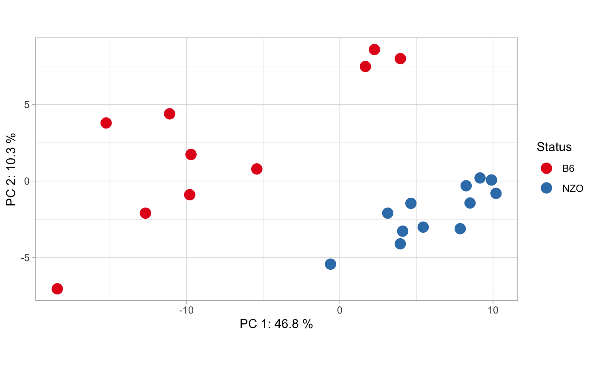
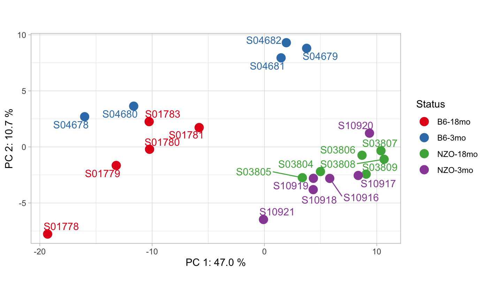
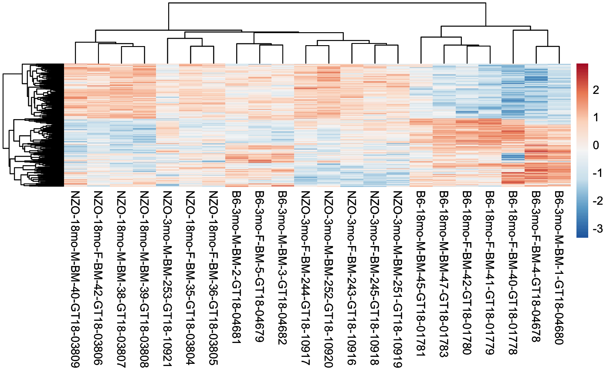
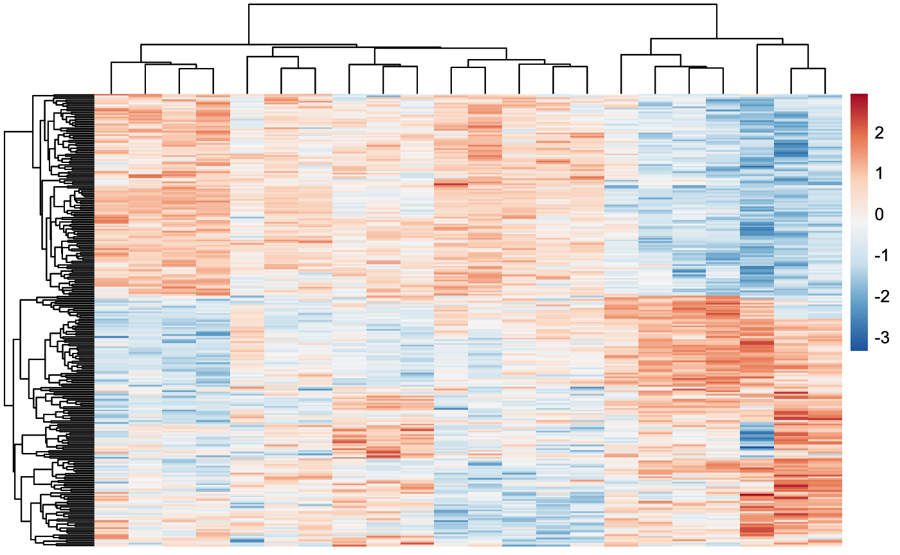
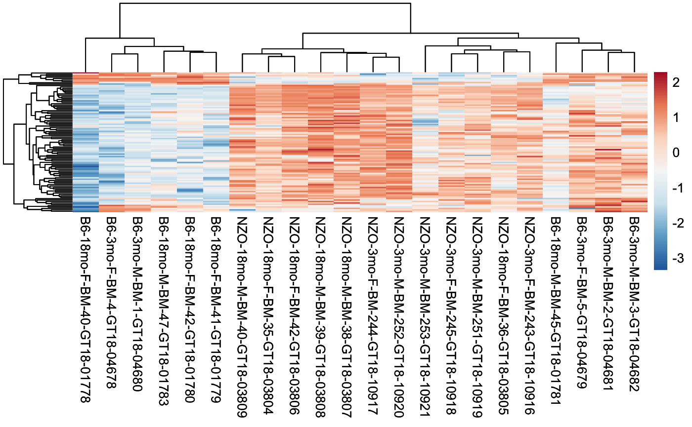
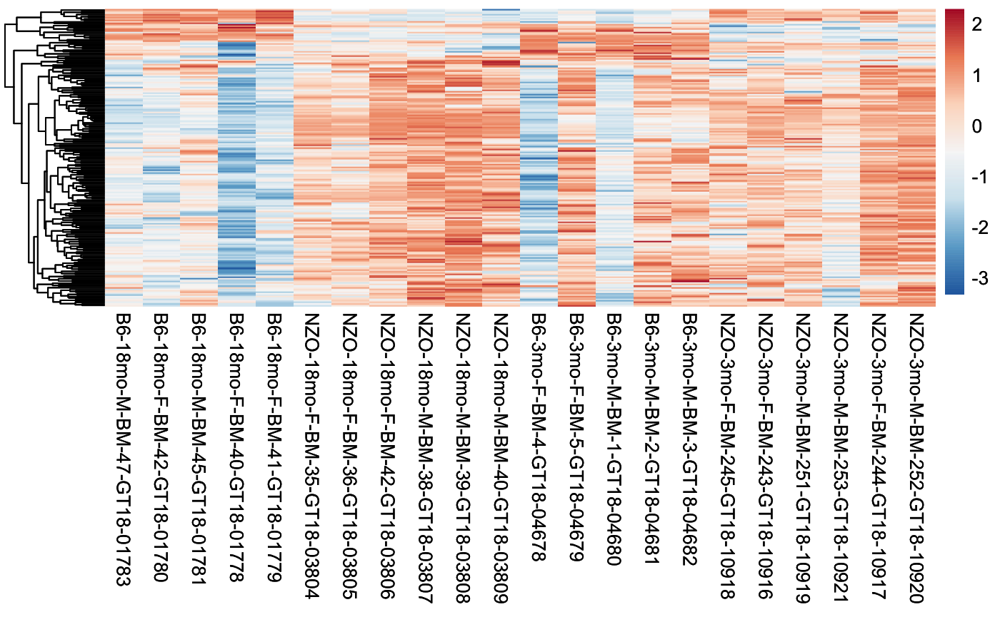
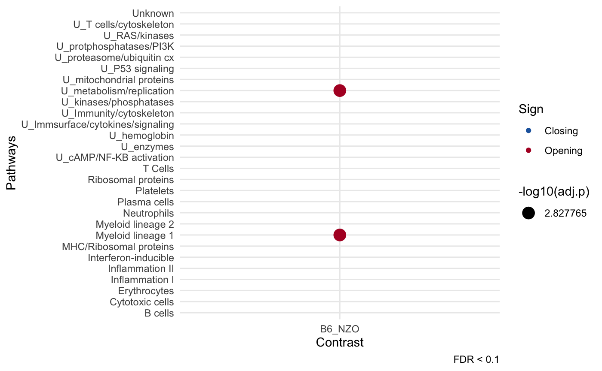
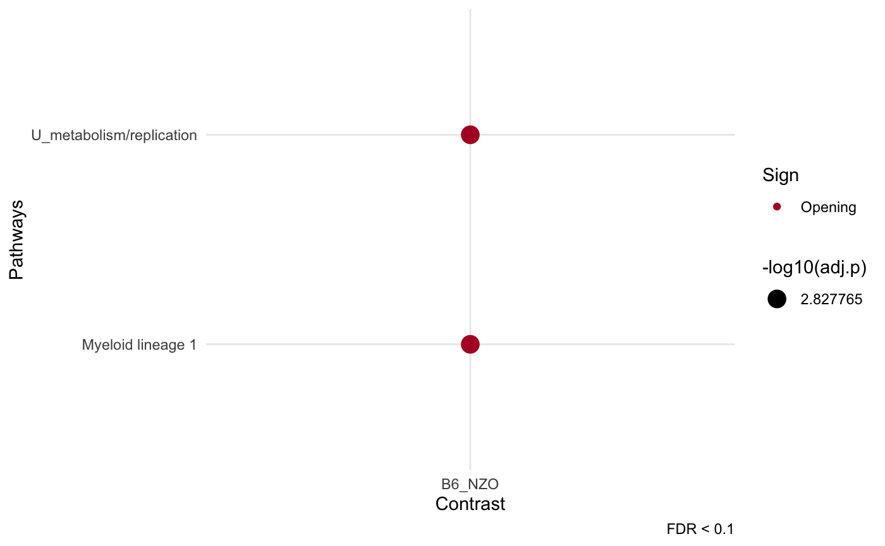

## Quick Start
Bed formatted consensus matrix (chr, start, end and samples)
dim(bed)## [1] 1000 25
# bed formatted file
head(bed[,1:4])## Chr Start End B6-18mo-M-BM-47-GT18-01783
## 52834 chr5 24841478 24845196 1592
## 29780 chr17 8162955 8164380 109
## 67290 chr8 40577584 40578029 72
## 51295 chr4 145277698 145278483 110
## 4267 chr1 180808752 180815472 2452
## 45102 chr3 88732151 88732652 49Create the contrasts you want to compare, here we create contrasts for 22 mice samples from different strains.
# create contrast vector which will be compared.
contrasts<- c("B6", "B6", "B6", "B6", "B6", "NZO", "NZO", "NZO", "NZO", "NZO", "NZO",
"B6", "B6", "B6", "B6", "B6", "NZO", "NZO", "NZO", "NZO", "NZO", "NZO")cinaR function directly computes the differentially
accessible peaks.
# If reference genome is not set hg38 will be used!
results <- cinaR(bed, contrasts, reference.genome = "mm10")## >> preparing features information... 2026-02-02 13:16:04
## >> identifying nearest features... 2026-02-02 13:16:04
## >> calculating distance from peak to TSS... 2026-02-02 13:16:04
## >> assigning genomic annotation... 2026-02-02 13:16:04
## >> assigning chromosome lengths 2026-02-02 13:16:15
## >> done... 2026-02-02 13:16:15Now, you can access differential accessibility (DA) and enrichment results.
names(results)## [1] "DA.results" "Enrichment.Results"Inside DA.results, you have the consensus peaks (cp) and
differentially accessible (DA) peaks. If batch correction was run, then
cp will be a batch-corrected consensus matrix, otherwise it
is the filtered and normalized version of original consensus peaks you
provided.
names(results$DA.results)## [1] "cp" "DA.peaks"There are many information cinaR provides such as
adjusted p value, log fold-changes, gene names etc for each peak:
colnames(results$DA.results$DA.peaks$B6_NZO)## [1] "Row.names" "seqnames" "start" "end"
## [5] "width" "strand" "annotation" "geneChr"
## [9] "geneStart" "geneEnd" "geneLength" "geneStrand"
## [13] "geneId" "transcriptId" "distanceToTSS" "gene_name"
## [17] "logFC" "FDR"Here is an overview of those DA peaks:
head(results$DA.results$DA.peaks$B6_NZO[,1:5])## Row.names seqnames start end width
## 1 chr1_134559439_134560787 chr1 134559439 134560787 1349
## 2 chr1_138158514_138159483 chr1 138158514 138159483 970
## 3 chr1_164247654_164251852 chr1 164247654 164251852 4199
## 4 chr1_171631196_171631780 chr1 171631196 171631780 585
## 5 chr1_173954537_173955745 chr1 173954537 173955745 1209
## 6 chr1_177935969_177936852 chr1 177935969 177936852 884Since the comparison is
B6_NZO, if fold-changes are positive it means they are more accesible in B6 compared to NZO and vice versa for negative values!
and here is a little overview for enrichment analyses results:
## module.name overlapping.genes adj.p
## 1 Myeloid lineage 1 TFEB,FBXL5,PLXNC1,GM2A,AGTPBP1,CTSB 0.05914491
## 2 U_metabolism/replication SLC2A6,GM2A,CTSB,PECAM1 0.05914491
## 3 U_mitochondrial proteins PIK3R1,PAQR3,UBE3A,MAP4K4,PTPRC 0.32816305
## 4 U_proteasome/ubiquitin cx PIK3R1,IREB2,PTPRC 0.39112517
## 5 U_Immunity/cytoskeleton RPS6,RPS19 0.66488512
## 6 Myeloid lineage 2 RNF157,MTUS1 0.66488512PCA Plots
You can easily get the PCA plots of the samples:
pca_plot(results, contrasts, show.names = F)
You can overlay different information onto PCA plots as well!
# Overlaid information
overlaid.info <- c("B6-18mo", "B6-18mo", "B6-18mo", "B6-18mo", "B6-18mo",
"NZO-18mo", "NZO-18mo", "NZO-18mo", "NZO-18mo", "NZO-18mo", "NZO-18mo",
"B6-3mo", "B6-3mo", "B6-3mo", "B6-3mo", "B6-3mo",
"NZO-3mo", "NZO-3mo", "NZO-3mo", "NZO-3mo", "NZO-3mo", "NZO-3mo")
# Sample IDs
sample.names <- c("S01783", "S01780", "S01781", "S01778", "S01779",
"S03804", "S03805", "S03806", "S03807", "S03808",
"S03809", "S04678", "S04679", "S04680", "S04681",
"S04682", "S10918", "S10916", "S10919", "S10921",
"S10917", "S10920")
pca_plot(results, overlaid.info, sample.names)
Heatmaps
Differential peaks
You can see the available comparisons using:
show_comparisons(results)## [1] "B6_NZO"Then, plot the differential peaks for a selected contrast using:
heatmap_differential(results, comparison = "B6_NZO")
Also, you can configure your heatmaps using the additional arguments
of pheatmap function. For more information check out
?pheatmap.
heatmap_differential(results, comparison = "B6_NZO", show_colnames = FALSE)
Most variable peaks
You can also plot most variable 100 peaks for all samples:
heatmap_var_peaks(results)
Plus, you can set the number of peaks to be used in these plots, and
again you can change the additional arguments of pheatmap
function. For more information check out ?pheatmap.
heatmap_var_peaks(results, heatmap.peak.count = 200, cluster_cols = F)
Enrichment Plots
You can plot your enrichment results using:
dot_plot(results)## Warning: Removed 54 rows containing missing values or values outside the scale range
## (`geom_point()`).
if it gets too crowded, you can get rid of the irrelevant pathways as well:
dot_plot(results, filter.pathways = T)
Creating different contrasts
Note that you can further divide the resolution of contrasts, for instance this is also a valid vector
contrasts <- sapply(strsplit(colnames(bed), split = "-", fixed = T),
function(x){paste(x[1:4], collapse = ".")})[4:25]
unique(contrasts)## [1] "B6.18mo.M.BM" "B6.18mo.F.BM" "NZO.18mo.F.BM" "NZO.18mo.M.BM"
## [5] "B6.3mo.F.BM" "B6.3mo.M.BM" "NZO.3mo.F.BM" "NZO.3mo.M.BM"in this case, each of them will be compared to each other which will result in 28 different comparisons.
Comparison scheme
As default, cinaR will use one vs one (OVA) scheme,
comparing each contrast to others one by one. However, this can be
changed to one vs all (OVA) which will compare each contrast to
rest:
# one-vs-one (results in n choose k comparisons, default)
cinaR(..., comparison.scheme = "OVO")
# one-vs-all (results in n comparisons)
cinaR(..., comparison.scheme = "OVA")Running for bulk RNA-seq data
To run cinaR with RNA-seq experiments, just provide the
count matrix, and specify the experiment type:
cinaR(matrix = count.matrix, ..., experiment.type = "RNA-Seq")Note that, count.matrix should be in the form of \(g \times (1+n)\) where \(g\) is the number of genes and \(n\) is the number of samples, and plus one
is for gene names.
Note that currently
cinaRcan only handle gene symbols (e.g. FOSL2, FOXA) and ensembl stable IDs (e.g. ENSG00000010404) for both human and mice!
Single-cell ATAC-seq (10x scATAC) preprocessing
cinaR is designed for bulk ATAC-seq. For 10x scATAC,
first pseudobulk your peak-by-cell matrix to preserve biological
replicates, then run cinaR on the resulting consensus
matrix.
set.seed(1)
counts <- matrix(rpois(4 * 8, lambda = 2), nrow = 4)
rownames(counts) <- c("chr1:1-100", "chr1:101-200", "chr2:1-150", "chr2:151-300")
colnames(counts) <- paste0("cell", 1:8)
meta <- data.frame(
sample = c("S1", "S1", "S2", "S2", "S3", "S3", "S4", "S4"),
group = c("A", "A", "A", "A", "B", "B", "B", "B"),
row.names = colnames(counts),
stringsAsFactors = FALSE
)
prep <- prep_scATAC_cinaR(
counts,
meta,
sample.col = "sample",
group.col = "group",
min.cells = 2
)
dim(prep$bed)## [1] 4 7
prep$contrasts## S1 S2 S3 S4
## "A" "A" "B" "B"You can then pass prep$bed and
prep$contrasts to cinaR() as usual.
Running enrichment with different dataset
You can run the enrichment analyses with a custom gene set:
cinaR(..., geneset = new_geneset)
cinaRgenesets
Easiest way to do this is to use cinaRgenesets package. You can select your gene set of interest and just plug it into your pipeline.
MSigDB
You can also download different gene sets from MSigDB site. Note that you should use the human gene symbol versions.
You can use
read.gmtfunction fromqusagepackage to read these genesets into your current environment.
Custom gene sets
A geneset must be a .gmt formatted symbol
file.
You can familiarize yourself with the format by checking out :
# default geneset to be used
data("VP2008")If you have gene and pathway names in a
data.frame, you can usesplitfunction to create your own.gmtformatted gene sets e.g.split(df$genes, df$pathways).
Selecting different reference genomes
For now, cinaR supports 3 genomes for human and mice
models:
hg38hg19mm10
You can set your it using reference.genome argument.
Batch Effect Correction
If you suspect your data have unknown batch effects, you can use:
cinaR(..., batch.correction = T)This option will run Surrogate
Variable Analysis (SVA) and try to adjust your data for unknown
batch effects. If however, you already know the batches of the samples,
you can simply set the batch.information argument as well.
This will not run the SVA but just add the batches to design matrix.
# runs SVA
cinaR(..., batch.correction = T)
# runs SVA with 2 surrogate variables
cinaR(..., batch.correction = T, sv.number = 2)
# adds only batch information to the design matrix! (does not run SVA)
# batch.information should be number a vector where
# the length of it equals to the number of samples.
cinaR(..., batch.correction = T, batch.information = c(rep(0, 11), rep(1,11)))Reminder - In our example data we have 22 samples
Adding extra covariates
Sometimes, one might want to add additional covariates to adjust the design matrix further, which affects the down-stream analyses. For instance, ages or sexes of the samples could be additional covariates. To account for those:
# Ages of the samples could be not in biological interests but should be accounted for!
cinaR(..., additional.covariates = c((18, 11), (3, 11)))
# More than one covariate for instance, sex and age
sex.info <- c("M", "F", "M", "F", "F", "F", "F", "F", "M", "M", "M",
"F", "F", "M", "M", "M", "F", "F", "M", "M", "F", "M")
age.info <- c((18, 11), (3, 11)
covs <- data.frame(Sex = sex.info, Age = age.info)
cinaR(..., additional.covariates = covs)Saving DA peaks to excel
Setting save.DA.peaks = TRUE in cinaR
function will create a DApeaks.xlsx file in the current
directory. This file includes all the comparisons in different tabs.
Additionally, you can set the path/name of the file using
DA.peaks.path argument after setting
save.DA.peaks = TRUE.
For instance,
results <- cinaR(..., save.DA.peaks = T, DA.peaks.path = "./Peaks_mice.xlsx")will create an excel file with name Peaks_mice.xlsx in
the current directory.
Using different GLM algorithms
Currently, cinaR supports 4 different algorithms,
namely;
- edgeR
- limma-voom
- limma-trend
- DESeq2
If not set, it uses edgeR for differential analyses. You
can change the used algorithm by simply setting DA.choice
argument. For more information, ?cinaR
Some useful arguments
# new FDR threshold for DA peaks
results <- cinaR(..., DA.fdr.threshold = 0.1)
# filters out pathways
results <- cinaR(..., enrichment.FDR.cutoff = 0.1)
# does not run enrichment pipeline
results <- cinaR(..., run.enrichment = FALSE)
# creates the piechart from chIpSeeker package
results <- cinaR(..., show.annotation.pie = TRUE)
# change cut-off value for dot plots
dot_plot(..., fdr.cutoff = 0.05)References
Robinson MD, McCarthy DJ, Smyth GK (2010). “edgeR: a Bioconductor package for differential expression analysis of digital gene expression data.” Bioinformatics, 26(1), 139-140. doi: 10.1093/bioinformatics/btp616.
Ritchie ME, Phipson B, Wu D, Hu Y, Law CW, Shi W, Smyth GK (2015). “limma powers differential expression analyses for RNA-sequencing and microarray studies.” Nucleic Acids Research, 43(7), e47.
Love, M.I., Huber, W., Anders, S. (2014) Moderated estimation of fold change and dispersion for RNA-seq data with DESeq2. Genome Biology, 15:550. 10.1186/s13059-014-0550-8
Session Info
## R version 4.2.2 (2022-10-31)
## Platform: aarch64-apple-darwin20 (64-bit)
## Running under: macOS 15.7.3
##
## Matrix products: default
## BLAS: /Library/Frameworks/R.framework/Versions/4.2-arm64/Resources/lib/libRblas.0.dylib
## LAPACK: /Library/Frameworks/R.framework/Versions/4.2-arm64/Resources/lib/libRlapack.dylib
##
## locale:
## [1] en_US.UTF-8/en_US.UTF-8/en_US.UTF-8/C/en_US.UTF-8/en_US.UTF-8
##
## attached base packages:
## [1] stats graphics grDevices utils datasets methods base
##
## other attached packages:
## [1] cinaR_0.2.6
##
## loaded via a namespace (and not attached):
## [1] shadowtext_0.1.2
## [2] ChIPseeker_1.34.1
## [3] fastmatch_1.1-3
## [4] BiocFileCache_2.6.1
## [5] systemfonts_1.0.4
## [6] plyr_1.8.8
## [7] igraph_1.4.1
## [8] lazyeval_0.2.2
## [9] splines_4.2.2
## [10] BiocParallel_1.32.6
## [11] GenomeInfoDb_1.34.9
## [12] ggplot2_3.5.1
## [13] digest_0.6.31
## [14] yulab.utils_0.0.6
## [15] htmltools_0.5.5
## [16] GOSemSim_2.24.0
## [17] viridis_0.6.2
## [18] GO.db_3.16.0
## [19] magrittr_2.0.3
## [20] memoise_2.0.1
## [21] limma_3.54.2
## [22] Biostrings_2.66.0
## [23] graphlayouts_0.8.4
## [24] matrixStats_1.5.0
## [25] pkgdown_2.0.7
## [26] enrichplot_1.18.3
## [27] prettyunits_1.1.1
## [28] colorspace_2.1-1
## [29] blob_1.2.4
## [30] rappdirs_0.3.3
## [31] ggrepel_0.9.3
## [32] textshaping_0.3.6
## [33] xfun_0.42
## [34] dplyr_1.1.2
## [35] crayon_1.5.2
## [36] RCurl_1.98-1.16
## [37] jsonlite_1.9.1
## [38] scatterpie_0.1.8
## [39] TxDb.Hsapiens.UCSC.hg19.knownGene_3.2.2
## [40] ape_5.7-1
## [41] glue_1.8.0
## [42] polyclip_1.10-4
## [43] gtable_0.3.6
## [44] zlibbioc_1.44.0
## [45] XVector_0.38.0
## [46] DelayedArray_0.24.0
## [47] BiocGenerics_0.44.0
## [48] scales_1.3.0
## [49] DOSE_3.24.2
## [50] pheatmap_1.0.12
## [51] edgeR_3.40.2
## [52] DBI_1.1.3
## [53] Rcpp_1.0.14
## [54] plotrix_3.8-2
## [55] viridisLite_0.4.2
## [56] progress_1.2.2
## [57] gridGraphics_0.5-1
## [58] tidytree_0.4.2
## [59] bit_4.0.5
## [60] stats4_4.2.2
## [61] httr_1.4.7
## [62] fgsea_1.24.0
## [63] gplots_3.1.3
## [64] RColorBrewer_1.1-3
## [65] pkgconfig_2.0.3
## [66] XML_3.99-0.14
## [67] farver_2.1.2
## [68] sass_0.4.5
## [69] dbplyr_2.3.2
## [70] locfit_1.5-9.7
## [71] labeling_0.4.3
## [72] ggplotify_0.1.0
## [73] tidyselect_1.2.0
## [74] rlang_1.1.5
## [75] reshape2_1.4.4
## [76] AnnotationDbi_1.60.2
## [77] munsell_0.5.1
## [78] tools_4.2.2
## [79] cachem_1.0.7
## [80] cli_3.6.4
## [81] generics_0.1.3
## [82] RSQLite_2.3.1
## [83] evaluate_0.20
## [84] stringr_1.5.0
## [85] fastmap_1.1.1
## [86] yaml_2.3.7
## [87] ragg_1.2.5
## [88] ggtree_3.6.2
## [89] knitr_1.42
## [90] bit64_4.0.5
## [91] fs_1.6.1
## [92] tidygraph_1.2.3
## [93] caTools_1.18.2
## [94] purrr_1.0.1
## [95] KEGGREST_1.38.0
## [96] ggraph_2.1.0
## [97] nlme_3.1-162
## [98] aplot_0.1.10
## [99] xml2_1.3.3
## [100] biomaRt_2.54.1
## [101] compiler_4.2.2
## [102] filelock_1.0.2
## [103] curl_5.2.3
## [104] png_0.1-8
## [105] treeio_1.22.0
## [106] tibble_3.2.1
## [107] tweenr_2.0.2
## [108] bslib_0.4.2
## [109] stringi_1.8.4
## [110] highr_0.10
## [111] GenomicFeatures_1.50.4
## [112] desc_1.4.2
## [113] lattice_0.20-45
## [114] Matrix_1.5-4
## [115] vctrs_0.6.5
## [116] pillar_1.10.1
## [117] lifecycle_1.0.4
## [118] BiocManager_1.30.20
## [119] jquerylib_0.1.4
## [120] TxDb.Mmusculus.UCSC.mm10.knownGene_3.10.0
## [121] data.table_1.17.8
## [122] cowplot_1.1.1
## [123] bitops_1.0-9
## [124] patchwork_1.3.0
## [125] rtracklayer_1.58.0
## [126] GenomicRanges_1.50.2
## [127] qvalue_2.30.0
## [128] R6_2.6.1
## [129] BiocIO_1.8.0
## [130] KernSmooth_2.23-20
## [131] gridExtra_2.3
## [132] IRanges_2.32.0
## [133] codetools_0.2-19
## [134] gtools_3.9.4
## [135] boot_1.3-28.1
## [136] MASS_7.3-58.3
## [137] SummarizedExperiment_1.28.0
## [138] rprojroot_2.0.3
## [139] rjson_0.2.21
## [140] withr_3.0.2
## [141] GenomicAlignments_1.34.1
## [142] Rsamtools_2.14.0
## [143] S4Vectors_0.36.2
## [144] GenomeInfoDbData_1.2.9
## [145] parallel_4.2.2
## [146] hms_1.1.3
## [147] grid_4.2.2
## [148] ggfun_0.0.9
## [149] tidyr_1.3.0
## [150] HDO.db_0.99.1
## [151] rmarkdown_2.21
## [152] MatrixGenerics_1.10.0
## [153] ggforce_0.4.1
## [154] Biobase_2.58.0
## [155] restfulr_0.0.15